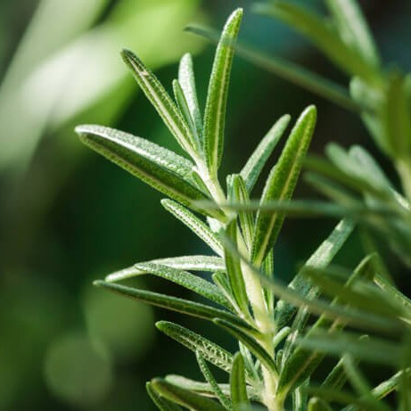
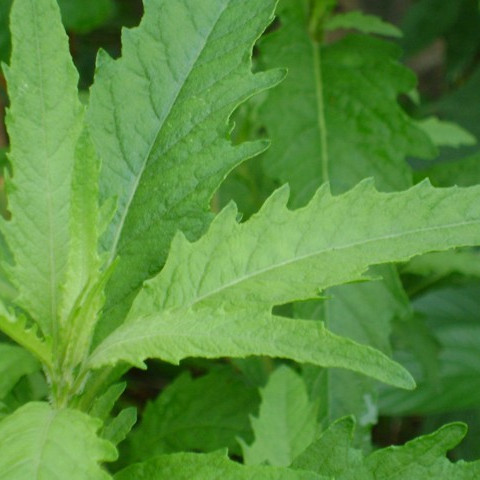

Alcance seu bem-estar completo com o poder das plantas!
As plantas medicinais apresentam ação farmacológica, ou seja, ajudam na cura ou tratamento de várias doenças. As plantas medicinais são usadas há
muito tempo por nossos antepassados e são conhecidas por terem um papel importante na cura e tratamento das doenças.
Alecrim
Rosmarinus officinalis L.
A planta da alegria
Guaco
Mikania glomerata Spreng

Imbátivel no combate a doenças pulmonares
Erva-de-Santa-Maria
Chenopodium ambrosioides L.
Ideal no tratamento de contusões
Vantagens da fitoterapia
- Forma de tratamento mais barata;
- Menos efeitos colaterais;
- Tratamento individualizado;
- Não causa dependência;
- Matéria-prima pode ser obtida facilmente;
O uso de chás está presente em nosso meio desde os primórdios da humanidade
Importantes plantas medicinais
Babosa
Aloe vera
Cicatrizante e anestésica
Erva Doce
Pimpinella anisum
Melhora a digestão
Tilia
Tilia cordata Miller
Combate a pressão alta e a ansiedade
Romã
Punica granatum
Rica em vitaminas C, K, B e ácido fólico
Erva Cidreira
Melissa officinalis
Combate ansiedade e estresse
Hortelã
Mentha spicata
Calmante e anti-inflamátorio
Erva Baleeira
Cordia verbenacea
Combate o reumatismo e dores musculares
Bálsamo
Sedum dendroideum
Cura a gastrite